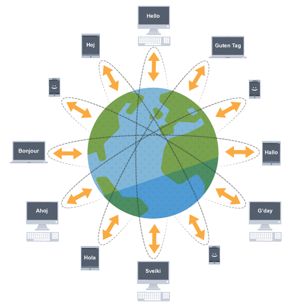
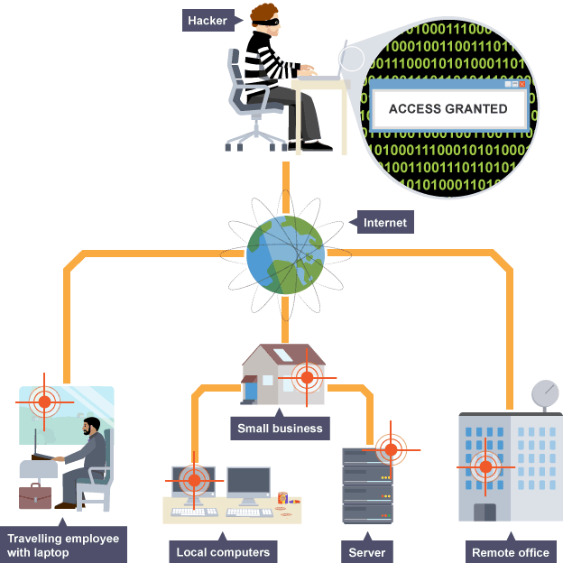
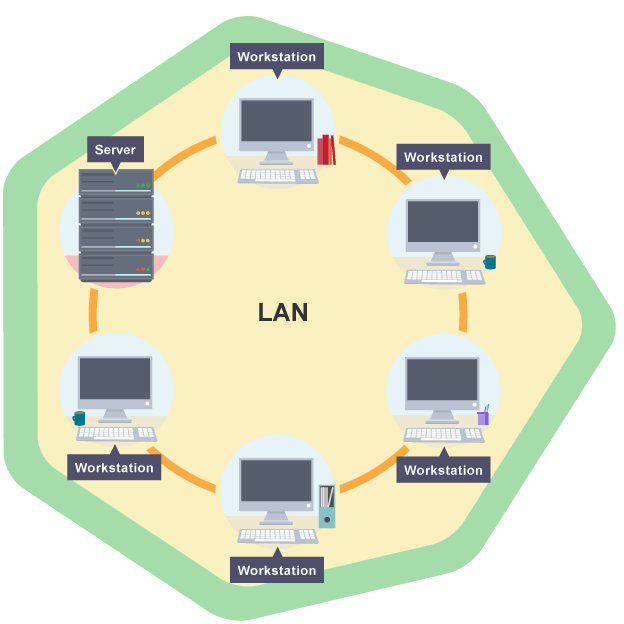
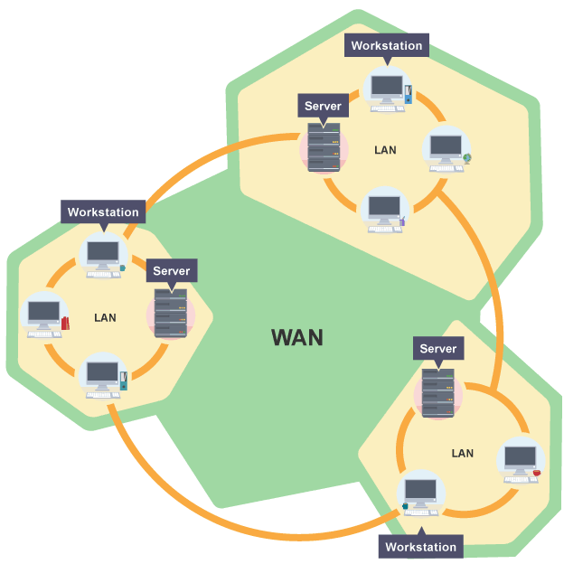

A network is two or more computers (or other electronic devices) that are connected together, usually by cables or Wi-Fi. Some computer networks will have a server. A server is a powerful computer that often acts as a central hub for services in a network, eg emails, internet access and file storage. Each computer connected to a server is called a client. A computer that is not connected to a network is called a standalone computer. 
Using a network allows you to share:
If we connect computers or devices together in a network we can expose ourselves to some problems. If the network breaks, this can make a number of tasks it is used for quite difficult. For example, it might not be possible to share photographs and opinions with friends. If computers and devices are networked together, we can expose ourselves to hackers and viruses. Most viruses are spread over a network and most hackers use a network to access other people’s computers. Without a network connection, a hacker would have to physically get to your computer. 
There are two main types of network:
 A local area network is when computers or devices are connected together over a small geographical area, such as within a home, a building or one site. A LAN can be created to share data or hardware such as a printer, or to share an internet connection.
A wide area network is when computers or devices are connected together over a large geographical area. For example, a company with an office in London and another in Beijing would use a WAN to allow the employees to share one network. Some companies will connect a number of LANs in different areas together to create a WAN. The biggest WAN we know is the internet. 